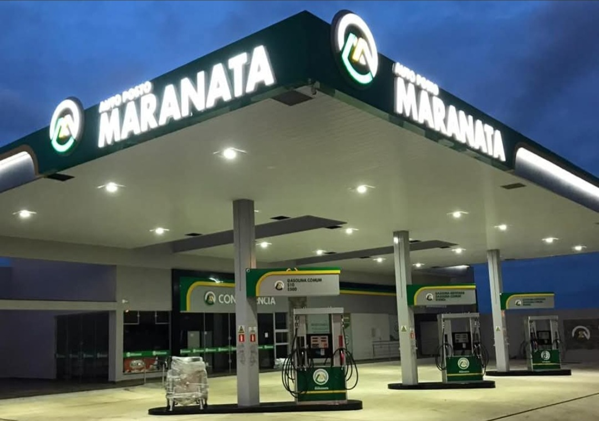
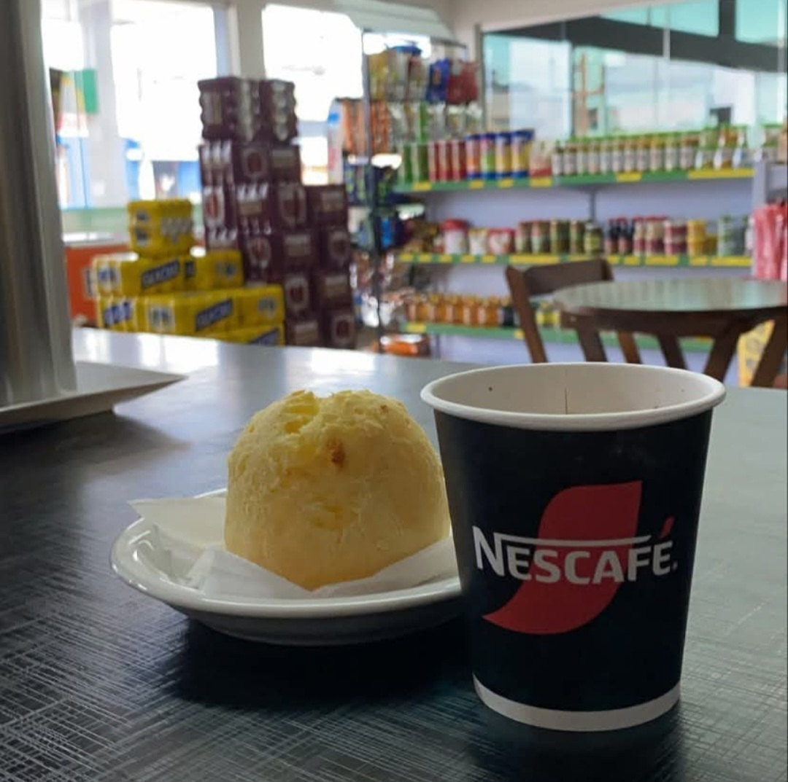
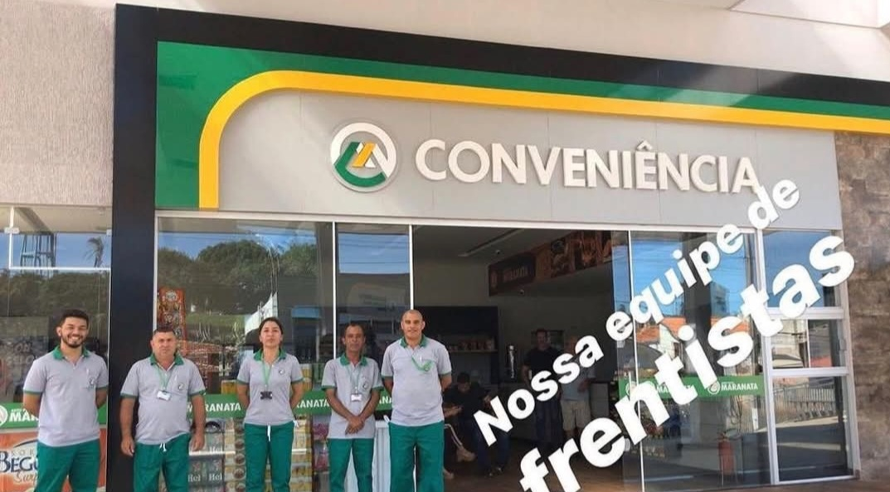
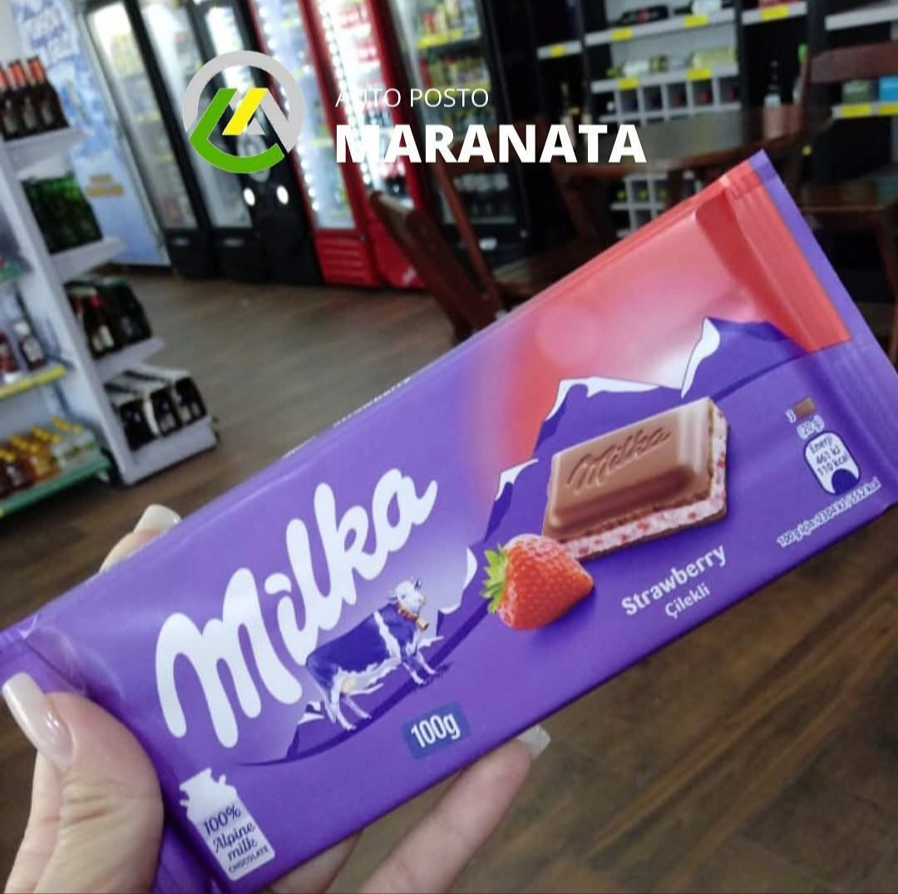

Posto de Combustível • Joaquim Távora - PR
O Auto Posto Maranata, situado em Joaquim Távora/PR, no Norte Pioneiro Paranaense, é referência para quem busca combustível de qualidade, localização estratégica e atendimento diferenciado.
Localizado na Avenida Paraná, 1503, em uma das principais vias da cidade, o posto atende motoristas e viajantes que seguem em direção a Carlópolis/PR, à divisa com o estado de São Paulo, e também quem retorna pela rota principal com destino a Curitiba/PR e Santo Antônio da Platina/PR.
Com funcionamento diário das 6h às 22h, o Auto Posto Maranata se destaca pelo atendimento VIP, pela confiança no abastecimento e por oferecer uma conveniência com diversas variedades, trazendo mais conforto, praticidade e comodidade aos seus clientes.
Mais do que um posto de combustível, é uma parada estratégica para quem valoriza segurança, bom atendimento e um serviço completo na região.
Endereço: Avenida Paraná, 1503
Cidade: Joaquim Távora - PR
Horário: das 6h às 22h
Telefone/WhatsApp: adicionar depois
Falar no WhatsApp Ligar✔ Combustível de qualidade ✔ Atendimento VIP ✔ Conveniência com diversas variedades ✔ Localização estratégica na avenida principal ✔ Atendimento para clientes da cidade e viajantes da região


